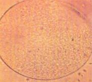
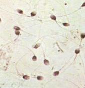
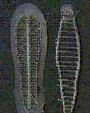

Au nom d’Allah le Clément, le Miséricordieux, Louanges à Allah.
Image d’un enfant
Allah a dit:
« Nous avons certes créé l'homme dans la forme la plus parfaite. »
Sourate At-Tin - 95.4.
Le microscope a été inventé par M. Hooke au 16 ème siècle. En 1677, Van Leeuwenhoek Antoine nous parle du spermatozoïde. Au 17 eme siècle, on croyait que le spermatozoïde avait la forme d'un petit bonhomme qui va grossir dans la femme (thèse héritée d'Aristote). Ce n'est donc que très récemment que l'on a découvert grâce aux progrès technologiques comment se déroule les étapes d'une grossesse. Cela se trouve déjà expliqué dans le coran et la sunna.
premières phases de développement :

image d'une ovule
Après l'ovulation, l'ovule ne bouge pas, mais se fait déplacer délicatement par les cils dans la trompe qui n'est pas plus large qu'une spaghetti.

image des cils de Fallope
Un seul spermatozoïde pénètre l'ovule, c'est la fécondation.
Il existe chez les hommes et les femmes une paire de chromosomes sexuels, ils sont symbolisé par XX pour la femme et XY pour les hommes. XX signifie que la femme ne peut transmettre que le chromosome de sorte X au futur enfant, c'est-à-dire le sexe féminin. Tandis que l’homme peut transmettre le X ou le Y de sa pair XY. C'est-à-dire X pour le sexe féminin et Y pour le sexe masculin.
Par exemple, X de l’homme plus X de la femme donnera naissance a une fille XX. Et si l’homme transmet le Y de sa paire XY. Alors X de la femme plus Y de l’homme donneront les caractéristiques sexuelles masculines XY au futur enfant.
Dans le coran, Dieu nous indique que tout est pair (jusqu’à l’atome). La zygote (sperme plus ovule) est justement appelée par le prophète nutfat ul amshaq tout comme dans le coran. Le prophète  aurait dit à un juif qui lui posait la question sur ce point que l’homme est créé à la fois de la sécrétion de l’homme et de la femme.(nutfat ul amshaq)
aurait dit à un juif qui lui posait la question sur ce point que l’homme est créé à la fois de la sécrétion de l’homme et de la femme.(nutfat ul amshaq)
Le sexe de l'enfant se décide donc dans les premiers instants où les chromosomes de l’homme contenu dans le spermatozoïde pénètrent l’ovule de la femme.
Il faut aussi ajouter que l'ovule est protégée par une membrane et que c'est seulement une partie du spermatozoïde qui pénètre l'ovule, en effet le spermatozoïde contient diverses substances son entrée en entier dans l'ovule serait néfaste.
Le prophète  a précisé dans un hadith que c’est dès la rencontre de la substance de la femme et celle de l’homme que se décide le sexe de l’enfant.
a précisé dans un hadith que c’est dès la rencontre de la substance de la femme et celle de l’homme que se décide le sexe de l’enfant.
Sur des milliers et des milliers de spermatozoïdes, concentrés sur un tout petit espace, un seul va réussir à pénétrer l’ovule qui se trouve alors dans la trompe. D'ailleurs sur des centaines de milliers seulement une centaine de spermatozoïdes environ arrivent à cet endroit.
On peut donc remarquer que sur ces milliers de spermatozoïdes de l’homme, un seul va pénétrer l'ovule : le plus fort et le meilleur.

Image de spermatozoïdes
Et Allah dit :
« puis Il tira sa descendance d'une goutte d'eau vile [le sperme]; » 32.8.
Le mot traduit en français par une goutte de sperme, signifie une infime quantité.
Et Allah dit :
« L'homme pense-t-il qu'on le laissera sans obligation à observer ? N'était-il pas une goutte de sperme éjaculé ? »
75.37.et 36.
Composition chimique
En 1990, les chercheurs ont trouvé que l'argile est le principal composant de formation des premières étapes de la vie, de même pour les restes des morts.
Allah dit:
« Nous avons certes créé l'homme d'un extrait d'argile »
Sourate 23, verset 12.
Après la fécondation et de nombreuses divisions apparaît un embryon.

image des divisions de l’ovule
L'embryon s’accroche ensuite dans l'utérus.
C'est la nidation qui s'appelle "alaqa" dans le saint coran.
Après être restée environ une semaine dans la trompe de Fallope, l'ovule fécondée va se fixer sur l'utérus.
Allah dit:
« qui forma l'homme de quelque chose qui s'accroche »
Transformation de l'embryon
L'embryon à une période ressemble à la sangsue, comme le montre les images ci-dessous. Or, en arabe le terme 'Alaqa' peut signifier 'quelque chose qui s'accroche', mais aussi le petit animal à ventouse, 'la sangsue.
' 
Images de la sangsue et de l'embryon.
Allah dit:
« Nous avons fait du sperme une adhérence et de l'adhérence nous avons crée une masse de chair machée . »
Sourate 23, Les croyants, verset 14

Le mot mudrat veut dire « comme maché ».

L'embryon ne ressemble pas à un être humain de l'extérieur,

Mais de l'intérieur les organes commencent déjà à se former.

Allah dit :
« Puis d'un embryon normalement formé aussi bien qu'informe. » Sourate al hajj, 22; v5
'Mukhallaq' veut dire 'formé'.
Le développement dans le ventre de la mère:
Il y a moins de 20 ans que l'on sait que l'obscurité est nécessaire au développement de l'enfant.
Allah dit :
« Il vous crée dans le ventre de vos mères création après création, dans trois ténèbres. »

Explication:
Les trois ténèbres sont le ventre ou la peau, l'utérus et le liquide amiotique.
L'expression "création après création" employée dans ce verset nous donne une autre indication importante puisqu'il est question de périodes et la science a en effet définie trois périodes de développement.
Et, cette endroit où va se développer l’embryon est appelé « qararin makin » dans le coran traduit par reposoir solide. C’est un endroit parfait pour le développement du bébé.

On voit bien que c’est la meilleure place pour grandir, être protégé, sortir ….le liquide amniotique protège le bébé des chocs et des secousses, mais aussi des microbes et des substances qui pourraient se trouver dans l'utérus.
Le visage prend forme peu à peu.


Allah dit dans le Coran:
Et Il vous a assigné l'ouïe, les yeux et le cœur. Que vous êtes peu reconnaissants ! »
32.9.
Allah dit dans le Coran:
« Que périsse l'homme qu'il est ingrat. De quoi l'a t-il crée d'une goutte de sperme. Il le crée et lui détermine son destin. »

« Et Allah vous a fait sortir du ventre de vos mères, dénués de tout savoir et vous a donné l'ouie, les yeux et les coeurs, afin que vous soyez reconnaissants. »
Les os et les muscles
Dieu dit :
« Ensuite, Nous avons fait du sperme une adhérence; et de l'adhérence Nous avons créé un embryon; puis, de cet embryon Nous avons créé des os et Nous avons revêtu les os de chair. Ensuite, Nous l'avons transformé en une tout autre création. Gloire à Allah le Meilleur des créateurs ! »
Sourate Al-Muminun - 23.14.
En effet, nous savons aujourd’hui que ce sont d’abord les os qui se forment, puis les muscles.

« Ensuite, Nous l'avons transformé en une tout autre création. »
Ensuite, tout le corps de l’enfant va se développer et grandir puisque de quelques millimètres et milligrammes, il va mesurer au final environ 50 centimètres et peser environ 3 kilos.
Les exegètes disent qu'il s'agit ici du moment où l'âme est donnée au foetus. Mais c'est Dieu qui sait tout cela parfaitement.
(Pour le désaccord à propos de l'âme entre 120 jours pour des savants et 40 jours pour d'autres, vous pouvez consulter l'explication du 4 em hadith de Nawawi sur ce site.)
Voir aussi sur le même thème :
Note : cet article qui avait été réalisé à partir d'une conférence du Dr Zandani (et qui allait dans le sens de l'apparition de l'âme après 40 jours ) a été modifié à partir (et après lecture) des informations contenues dans le livre du Dr Ali Mohammed Albar (Human Development). La raison: les explications du Dr Albar semblent confirmer (preuves scientifiques et coraniques à l'appui) la thèse optée par la majorité des savants qui est de 120 jours pour l'insufflement de l'âme. Mais c'est Dieu qui sait tout cela parfaitement.
Que la paix et les bénédictions d'Allah soient sur le prophète Mohammad, celui qui a tenu sa promesse, le confident. Ô Allah nous ne savons que ce que Tu nous as appris, c’est Toi qui détiens la science. Ô Allah apprend nous ce qui nous apportera du bien et fais nous profiter du bien de ce que Tu nous as appris et augmente nos connaissances. Et embelli le bien à nos yeux et aide nous à le suivre. Et enlaidi le mal à nos yeux et aide nous à nous en détourner. Et mets nous parmi ceux qui écoutent la parole et suivent les meilleures d’entre elles. Et fais de nous tes bons adorateurs par Ta miséricorde.
Gloire à Toi Seigneur, que Tes louanges soient célébrées, j'atteste qu'il n'y a de divinité que Toi, j'implore Ton pardon et je reviens vers Toi repentante.